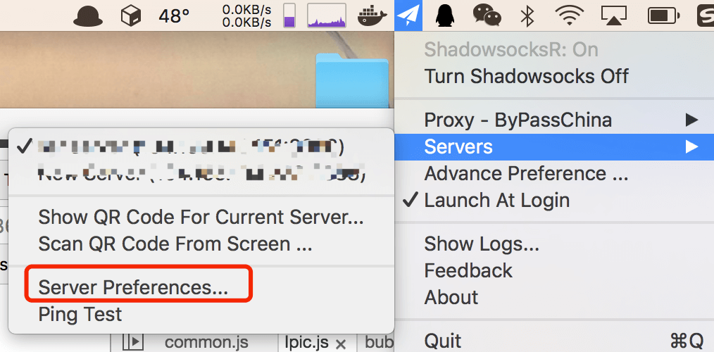
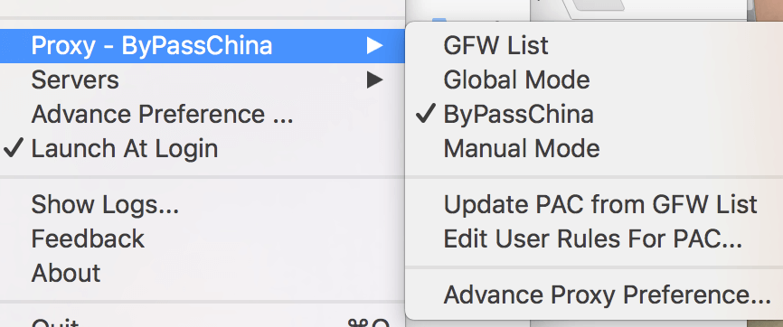

利用 Shadowsocksr 和云主机翻墙
- Shadowsocksr vps
世界那么大，我想去看看，但是被墙了…
以前用的VPN，叫做什么green vpn，总体来说，还不错，但是最近老断，于是就搞了个新的法子。申请一台云主机，在上面搭一个Shadowsocks，然后就可以在所有客户端看 YouTube 了，当然，这所有的一切都是免费的。
Shadowsocks已经河蟹，这里不再说ss，只说ssr：一个基于ss的新分支
搭建Shadowsocksr服务器
首先需要搭建一台云主机，首先阿里云或者青云都是挺好的，但是都需要国外的主机，要不然怎么去翻墙，你也可以选择linecode、vultr、aws、azure、GCE（google）。这些大部分都有一年的免费期限，也会有免费赠送不定的体验金的福利。中间会要求绑定信用卡。
主机建议选择Ubuntu或者debian，申请下来了后就可以安装ssr了。
可以从这个地址上找到ssr，然后可以参照这个wiki来进行配置安装，在这里记录一下步骤吧：
如果你的服务端python版本在2.6以下，那么必须更新python到2.6.x或2.7.x版本。
首先需要有git：
apt-get update && apt-get install -y git
获取源代码：
git clone -b manyuser https://github.com/shadowsocksr/shadowsocksr.git
进入子目录：
cd ~/shadowsocksr && bash initcfg.sh && cd ~/shadowsocksr/shadowsocks
快速运行，当然也可以通过配置文件运行，具体请看wiki：
python server.py -p 443 -k password -m aes-256-cfb -O auth_sha1_v4 -o http
说明：-p 端口 -k 密码 -m 加密方式 -O 协议插件 -o 混淆插件
配置文件参考：
{
"server": "0.0.0.0",
"server_ipv6": "::",
"server_port": 8388,
"local_address": "127.0.0.1",
"local_port": 1080,
// pass word
"password": "XXXXXXXX",
"method": "aes-128-ctr",
"protocol": "auth_aes128_md5",
"protocol_param": "",
"obfs": "tls1.2_ticket_auth",
"obfs_param": "",
"speed_limit_per_con": 0,
"speed_limit_per_user": 0,
"additional_ports" : {},
"timeout": 120,
"udp_timeout": 60,
"dns_ipv6": false,
"connect_verbose_info": 0,
"redirect": "",
"fast_open": false
}
如果要后台运行：
python server.py -p 443 -k password -m aes-256-cfb -O auth_sha1_v4 -o http
如果要停止/重启：
python server.py -d stop/restart
查看日志：
tail -f /var/log/shadowsocksr.log
如果想要更新源代码。可以直接进入目录执行:
git pull
客户端
服务器端配置好后，就需要来搞客户端了。这个客户端和常规的ss客户端不一致：ssr客户端可以兼容ss客户端，但是反过来不可以的。基本上全平台都有ssr的客户端。这里OSX的客户端来做一个例子：
可以从这里下载 ssr OSX 客户端，然后启动ShadowsocksR，客户端配置参照下图:

选择新建服务，然后根据ssr的配置依次填写:

然后可以选择代理方式：

你可以选择 global mode 和 by pass china 、gfw list、manual mode 来设置代理方式。
当然也可以导出当前服务器的二维码（其实是一个服务器配置进行base64处理后生成的二维码，也可以为 ssr://(base64)，这样把二维码分享给其他人，其他人直接ssr自动的 通过扫描二维码导入就可以链接服务了。